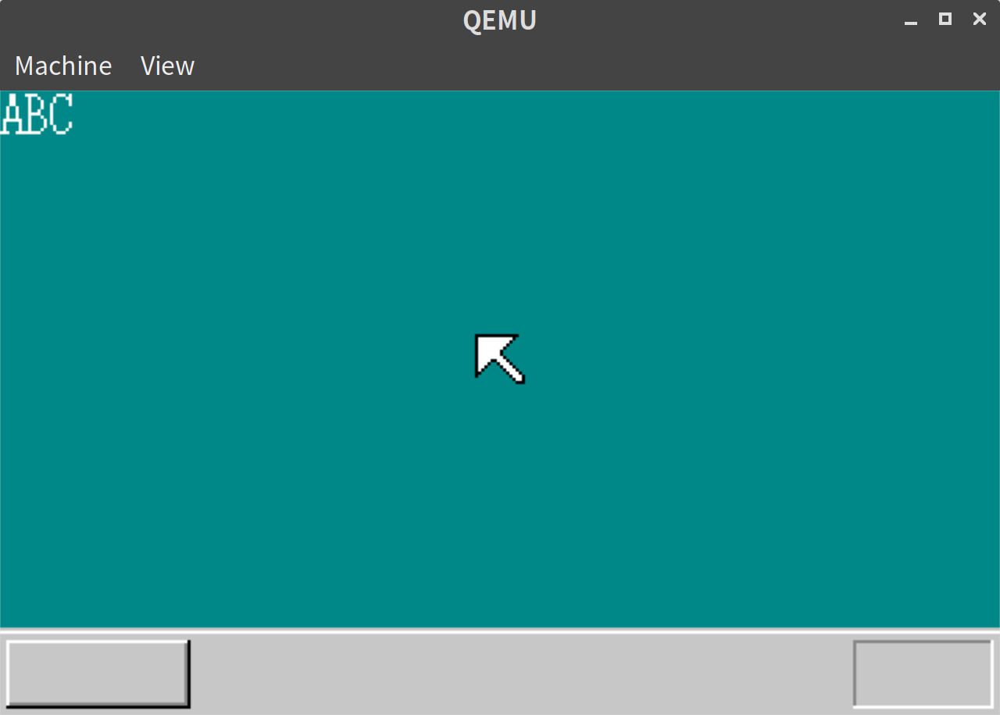
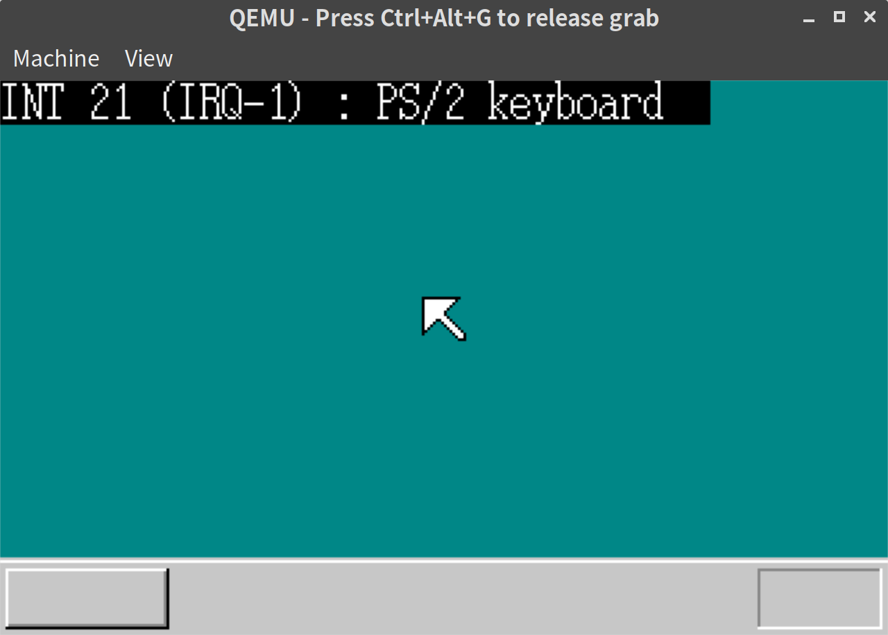

「30日でできる！OS自作入門」をRustで。6日目
「30日でできる！OS自作入門 」のC言語の部分をできるだけRustですすめてみる。今回は6日目の内容。
GDT, IDTの定義
前回やらなかったGDT, IDTの定義をする。
新しく descriptor_table.rs というファイルを作り、そこに追記する。
use crate::asm;
use crate::handler;
#[derive(Debug, Clone, Copy)]
#[repr(C, packed)]
struct SegmentDescriptor {
limit_low: u16,
base_low: u16,
base_mid: u8,
access_right: u8,
limit_high: u8,
base_high: u8,
}
impl SegmentDescriptor {
fn new(mut limit: u32, base: i32, mut ar: i32) -> SegmentDescriptor {
if limit > 0xfffff {
ar |= 0x8000;
limit /= 0x1000;
}
SegmentDescriptor {
limit_low: limit as u16,
base_low: base as u16,
base_mid: (base >> 16) as u8,
access_right: ar as u8,
limit_high: ((limit >> 16) as u8 & 0x0f) | ((ar >> 8) as u8 & 0xf0),
base_high: (base >> 24) as u8,
}
}
}
#[derive(Debug, Clone, Copy)]
#[repr(C, packed)]
struct GateDescriptor {
pub offset_low: u16,
pub selector: u16,
pub dw_count: u8,
pub access_right: u8,
pub offset_high: u16,
}
impl GateDescriptor {
fn new(offset: u32, selector: i32, ar: i32) -> GateDescriptor {
GateDescriptor {
offset_low: offset as u16,
selector: selector as u16,
dw_count: (ar >> 8) as u8,
access_right: ar as u8,
offset_high: (offset >> 16) as u16,
}
}
}
const ADR_GDT: i32 = 0x00270000;
const LIMIT_GDT: i32 = 0x0000ffff;
const ADR_IDT: i32 = 0x0026f800;
const LIMIT_IDT: i32 = 0x000007ff;
const ADR_BOTPAK: i32 = 0x00280000;
const LIMIT_BOTPAK: u32 = 0x0007ffff;
const AR_INTGATE32: i32 = 0x008e;
const AR_DATA32_RW: i32 = 0x4092;
const AR_CODE32_ER: i32 = 0x409a;
pub fn init() {
use crate::interrupt::{inthandler21, inthandler2c};
use asm::{load_gdtr, load_idtr};
// GDTの初期化
for i in 0..=(LIMIT_GDT / 8) {
let gdt = unsafe { &mut *((ADR_GDT + i * 8) as *mut SegmentDescriptor) };
*gdt = SegmentDescriptor::new(0, 0, 0);
}
let gdt = unsafe { &mut *((ADR_GDT + 1 * 8) as *mut SegmentDescriptor) };
*gdt = SegmentDescriptor::new(0xffffffff, 0x00000000, AR_DATA32_RW);
let gdt = unsafe { &mut *((ADR_GDT + 2 * 8) as *mut SegmentDescriptor) };
*gdt = SegmentDescriptor::new(LIMIT_BOTPAK, ADR_BOTPAK, AR_CODE32_ER);
load_gdtr(LIMIT_GDT, ADR_GDT);
// IDTの初期化
for i in 0..=(LIMIT_IDT / 8) {
let idt = unsafe { &mut *((ADR_IDT + i * 8) as *mut GateDescriptor) };
*idt = GateDescriptor::new(0, 0, 0);
}
// 割り込みの設定
let idt = unsafe { &mut *((ADR_IDT + 0x21 * 8) as *mut GateDescriptor) };
*idt = GateDescriptor::new(handler!(inthandler21) as u32, 2 * 8, AR_INTGATE32);
let idt = unsafe { &mut *((ADR_IDT + 0x2c * 8) as *mut GateDescriptor) };
*idt = GateDescriptor::new(handler!(inthandler2c) as u32, 2 * 8, AR_INTGATE32);
load_idtr(LIMIT_IDT, ADR_IDT);
}Cで実装した場合とメモリ配置が同じになるように、structには #[repr(C, packed)] をつけている。見た目は本のCのコードとあまりかわらないと思う。
asm.rsの追記
load_gdtr, load_idtr などは asm.rs のほうに追加しておく。ついでにわりこみハンドラを生成するマクロ handler! もつくった。(
マクロについてはここが参考になった。)
// asm.rs
#[derive(Debug, Clone, Copy)]
#[repr(C, packed)]
struct Dtr {
limit: i16,
base: i32,
}
pub fn load_gdtr(limit: i32, adr: i32) {
unsafe {
asm!("LGDT ($0)" :: "r"(&Dtr { limit: limit as i16, base: adr } ) : "memory");
}
}
pub fn load_idtr(limit: i32, adr: i32) {
unsafe {
asm!("LIDT ($0)" :: "r"(&Dtr { limit: limit as i16, base: adr }) : "memory");
}
}
#[macro_export]
macro_rules! handler {
($name: ident) => {{
pub extern "C" fn wrapper() -> ! {
unsafe {
asm!("PUSH ES
PUSH DS
PUSHAD
MOV EAX,ESP
PUSH EAX
MOV AX,SS
MOV DS,AX
MOV ES,AX" : : : : "intel", "volatile");
asm!("CALL $0" : : "r"($name as extern "C" fn()) : : "intel");
asm!("POP EAX
POPAD
POP DS
POP ES
IRETD" : : : : "intel", "volatile");
::core::intrinsics::unreachable();
}
}
wrapper
}}
}ここでもメモリ配置が本と同様になるように、 #[repr(C, packed)] をつけたstructを定義し、それを読み込むようにした。
PICの定義、割り込みの際の動作の定義
PICまわりも本に準拠する形で作った。interrupt.rs という別ファイルにまとめている。
// interrupt.rs
use crate::asm::out8;
const PIC0_ICW1: u32 = 0x0020;
const PIC0_OCW2: u32 = 0x0020;
const PIC0_IMR: u32 = 0x0021;
const PIC0_ICW2: u32 = 0x0021;
const PIC0_ICW3: u32 = 0x0021;
const PIC0_ICW4: u32 = 0x0021;
const PIC1_ICW1: u32 = 0x00a0;
const PIC1_OCW2: u32 = 0x00a0;
const PIC1_IMR: u32 = 0x00a1;
const PIC1_ICW2: u32 = 0x00a1;
const PIC1_ICW3: u32 = 0x00a1;
const PIC1_ICW4: u32 = 0x00a1;
pub fn init() {
out8(PIC0_IMR, 0xff); // 全ての割り込みを受け付けない
out8(PIC1_IMR, 0xff); // 全ての割り込みを受け付けない
out8(PIC0_ICW1, 0x11); // エッジトリガモード
out8(PIC0_ICW2, 0x20); // IRQ0-7は、INT20-27で受ける
out8(PIC0_ICW3, 1 << 2); // PIC1はIRQ2にて接続
out8(PIC0_ICW4, 0x01); // ノンバッファモード
out8(PIC1_ICW1, 0x11); // エッジトリガモード
out8(PIC1_ICW2, 0x28); // IRQ8-15は、INT28-2fで受ける
out8(PIC1_ICW3, 2); // PIC1はIRQ2にて接続
out8(PIC1_ICW4, 0x01); // ノンバッファモード
out8(PIC0_IMR, 0xfb); // 11111011 PIC1以外は全て禁止
out8(PIC1_IMR, 0xff); // 11111111 全ての割り込みを受け付けない
}
pub fn allow_input() {
out8(PIC0_IMR, 0xf9); // PIC1とキーボードを許可(11111001)
out8(PIC1_IMR, 0xef); // マウスを許可(11101111)
}
pub extern "C" fn inthandler21() {
use crate::vga::{Color, Screen, ScreenWriter};
let mut screen = Screen::new();
screen.boxfill8(Color::Black, 0, 0, 32 * 8 - 1, 15);
let mut writer = ScreenWriter::new(Screen::new(), Color::White, 0, 0);
use core::fmt::Write;
write!(writer, "INT 21 (IRQ-1) : PS/2 keyboard").unwrap();
loop {
crate::asm::hlt();
}
}
pub extern "C" fn inthandler2c() {
use crate::vga::{Color, Screen, ScreenWriter};
let mut screen = Screen::new();
screen.boxfill8(Color::Black, 0, 0, 32 * 8 - 1, 15);
let mut writer = ScreenWriter::new(Screen::new(), Color::White, 0, 0);
use core::fmt::Write;
write!(writer, "INT 2C (IRQ-12) : PS/2 mouse").unwrap();
loop {
crate::asm::hlt();
}
}lib.rsの初期化処理を修正
エントリポイントとなる関数は以下のように修正した。
// lib.rs
#[no_mangle]
#[start]
pub extern "C" fn haribote_os() -> ! {
use asm::{hlt, sti};
use vga::{Screen, ScreenWriter};
descriptor_table::init();
interrupt::init();
sti();
interrupt::allow_input();
let mut screen = Screen::new();
screen.init();
let mut writer = ScreenWriter::new(screen, vga::Color::White, 0, 0);
use core::fmt::Write;
write!(writer, "ABC").unwrap();
loop {
hlt()
}
}実行結果
初期状態

キーボード打鍵後

打鍵に反応して表示がかわったことがわかる。
今回実装コードの差分自体は多くなかったが、ハマってしまいだいぶ時間がかかった。動かないときに何をデバッグしてよいのか最初はわからず、苦労した。gdbでメモリのdumpを見ながらデバッグをしたが、今まであまりしてこなかったので、gdbの操作含め勉強になった。
6日目は以上となる。ここまでの内容のコードはyoshitsugu/hariboteos_in_rustのday6としてタグを打ってある。
Screen などは Writing an OS in Rust の WRITER のように、spin_no_std
な lazy_static! を使って static として管理したいのだが、entered unreachable code というエラーがでてしまいできていない。調べても同様の事例がでてこないので、自分のHariboteOS環境特有の現象なのだろうか。
参考文献
- Handling Exceptions using naked Functions
- 例外ハンドリングまわりの記事。参考になった。